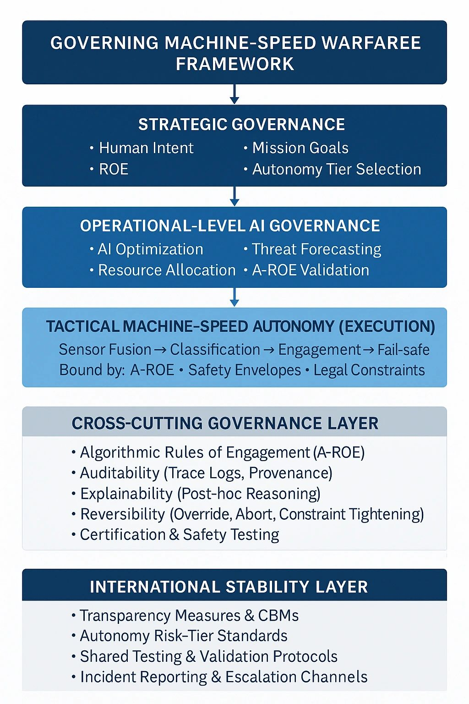
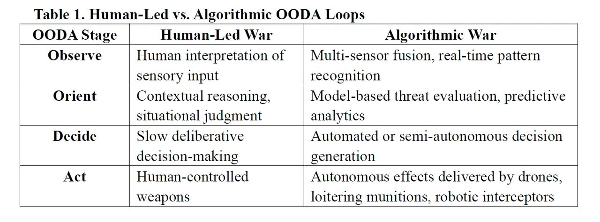

Author: Dr. Shaoyuan Wu
ORCID: https://orcid.org/0009-0008-0660-8232
Affiliation: Global AI Governance and Policy Research Center, EPINOVA
Date: December 12, 2025
Artificial intelligence (AI), autonomous weapon systems, and automated command-and-control architectures are accelerating the tempo of warfare toward machine-speed OODA cycles measured in milliseconds. These developments challenge the foundational assumption of international humanitarian law (IHL) and regulatory instruments such as DoD Directive 3000.09 that human judgment can feasibly govern the use of force. The resulting strategic discontinuity arises when military effectiveness requires machine-speed autonomy while legal and institutional systems remain anchored in human-speed oversight and accountability.
This article analyzes the structural nature of this discontinuity across temporal, doctrinal, organizational, and stability dimensions; demonstrates its real-world manifestations in missile-defense automation, algorithmically accelerated kill chains, and swarm-based distributed autonomy; and develops a governance framework for mitigating, though not resolving, the gap between human cognition and machine-tempo operations. The framework integrates risk-tiered autonomy, layered oversight architectures, machine-readable rules of engagement, auditability and reversibility requirements, and international confidence-building measures. Together, these pathways outline how meaningful human control and strategic stability may be preserved as warfare increasingly exceeds the temporal limits of human decision-making.
AI-enabled warfare is not just an incremental technological upgrade. It constitutes a structural transformation in the conception, organization, and execution of military operations. Historically, the tempo of conflict has been bounded by human cognitive limits—the time required to perceive, interpret, decide, and act. In an emerging paradigm of algorithmic warfare, however, decision cycles increasingly operate at the tempo of distributed computing systems rather than human cognition.
The shift from human-dominated to algorithmically driven decision-making is propelled by:
Yet, the normative environment remains anchored in assumptions that decisions should remain human-led, human-paced, and human-accountable. IHL principles of distinction, proportionality, and precaution depend on human reasoning, as do doctrines of command responsibility. DoD Directive 3000.09 reinforces these assumptions, prohibiting autonomous target selection without meaningful opportunities for human review.
As a result, a widening gap has emerged between what future battlefields require for operational survivability and what legal systems demand for normative legitimacy. This article conceptualizes this gap as a strategic discontinuity and argues that governance innovation—rather than technological prohibition—is required to mitigate it.
2.1 OODA Loop Redistribution: From Human Primacy to Machine Dominance
The traditional observe–orient–decide–act (OODA) loop, long regarded as the foundational cognitive model for military decision-making, is being systematically reconfigured by advances in AI-enabled sensing, processing, and autonomous action.
At each stage of the cycle, technological capabilities increasingly rival or surpass human cognitive performance, redistributing decision authority from human operators to algorithmic systems.

These developments indicate that AI’s natural trajectory is to expand into and progressively dominate the decision-making space traditionally occupied by humans. This evolution erodes human primacy not only in the execution of military effects but also in the more cognitively demanding phases of orientation and decision formulation. As algorithmic systems assume greater responsibility for threat interpretation, prioritization, and action selection, the human role risks being relegated to supervisory or post hoc evaluative functions, fundamentally altering the structure of command and control.
Further, this trajectory prompts an unavoidable inquiry: will future warfare include scenarios where human beings are no longer physically present on the battlefield, and where engagements unfold almost exclusively among autonomous systems?
It also raises a deeper question about the continued relevance and addressees of existing legal and doctrinal frameworks: upon whom, and in what sense, can obligations, accountability, and deterrent effects meaningfully operate in a battlespace increasingly populated by machines rather than human combatants?
While the redistribution of cognitive and decision-making functions within the OODA loop illustrates how algorithmic systems are displacing human primacy, it does not yet explain why this transition accelerates once initiated. The move toward algorithmic dominance generates operational and strategic pressures that reinforce further automation, transforming incremental substitution into a path-dependent, self-amplifying process.
2.2 Self-Accelerating Dynamics of Military AI
AI-enabled military systems evolve through a set of mutually reinforcing, path-dependent dynamics that accelerate the transition toward algorithmic dominance in decision-making:
Collectively, these dynamics create a self-accelerating trajectory in which human-speed warfare becomes increasingly untenable in high-intensity or time-sensitive conflict environments. The result is a strategic environment where the adoption of autonomy is driven not only by opportunity but by necessity, reshaping both battlefield conduct and the institutional logic of military power.
The discussions of “machine-speed warfare” often remain metaphorical unless tied to an explicit temporal and functional definition. For analytical clarity, this paper defines machine-speed OODA loops as decision cycles in which the observe–orient–decide–act sequence is executed at timescales below the threshold of meaningful human cognitive intervention.
In contemporary systems, this typically involves sensor fusion, target classification, threat prioritization, and engagement decisions occurring within 1–50 milliseconds, driven by hardware-accelerated inference, automated tracking algorithms, and closed-loop fire-control architectures.
By contrast, human-speed OODA loops require seconds to minutes, reflecting biological limits in perception, interpretation, and deliberation, as well as procedural constraints such as communication, verification, and supervisory approval.
The two temporal regimes are not simply different in degree, but in kind: the shorter machine-speed loop structurally precludes synchronous human participation.
Operationally, machine-speed OODA can also be distinguished by its functional properties, which include:
These characteristics together constitute a regime in which autonomy is not merely a design feature but an operational necessity. Defining machine-speed OODA in this explicit, measurable manner clarifies why human-speed oversight becomes infeasible within certain engagement windows, and it grounds the subsequent analysis of strategic discontinuity, responsibility gaps, and stability risks in following Sections 4 and 5.
3.1 Human Judgment at the Core of IHL
International humanitarian law (IHL) is built upon the presumption that human judgment is both indispensable and temporally feasible within the decision cycles of armed conflict. Its core principles require forms of reasoning that are inherently interpretive, contextual, and anticipatory:
These principles collectively assume human-speed deliberation and the cognitive bandwidth necessary to understand and evaluate context, intention, and consequence. They do not envision decision cycles unfolding in milliseconds, nor do they provide mechanisms for assessing or constraining autonomous systems operating at machine tempo. As a result, the accelerating shift toward algorithmic decision-making exposes a fundamental temporal mismatch between the assumptions of IHL and the operational realities of machine-speed warfare.
While IHL presupposes human judgment as the locus of compliance, practice suggests that human-speed control is not a guarantee of lawful or stable conduct. In high-intensity operations, human-led OODA cycles are routinely degraded by cognitive overload, fragmented situational awareness, stress-induced heuristic decision-making, and organizational compression within complex command chains. These conditions generate well-known failure modes—misidentification, over-reliance on incomplete ISR feeds, inconsistent proportionality assessments, and procedural shortcuts under time pressure—that can undermine distinction, proportionality, and precaution even when humans remain nominally “in control.” The governance challenge, therefore, is not simply that machines outpace humans, but that human-speed decision-making itself exhibits systematic vulnerabilities under precisely the operational conditions where legality and escalation control matter most.
Accordingly, the objective of autonomy governance cannot be to “restore” an idealized human-centered model of control, but to design institutional and technical mechanisms that reduce predictable failure modes—whether human or algorithmic—under time-compressed conflict conditions.
3.2 DoD Directive 3000.09 and the Institutional Logic of Human Control
DoD Directive 3000.09 codifies the United States’ commitment to maintaining meaningful human control (MHC) over autonomous and semi-autonomous weapons. Its requirements reflect an institutional logic grounded in human-speed oversight and accountability. Specifically, the Directive mandates that:
While normatively coherent within a human-centered regulatory paradigm, these requirements become operationally infeasible in machine-speed combat environments. When engagement windows collapse to milliseconds, opportunities for genuine human deliberation effectively disappear. The result is that human intervention, at least at the tactical decision point, risks becoming symbolic rather than substantive, a form of legal fiction that satisfies doctrinal expectations but fails to correspond to the temporal realities of algorithmic conflict (Scharre, 2018).
Consequently, Directive 3000.09 unintentionally reinforces the temporal mismatch between U.S. military doctrine and emerging modes of warfare. Its insistence on human-speed oversight preserves normative legitimacy but constrains operational viability, thereby exposing a strategic tension at the heart of contemporary autonomy governance: the requirement for meaningful human control persists precisely as the technological conditions that make such control meaningful are eroding.
Further, beyond the U.S. regulatory framework, autonomous weapon systems remain under active discussion within the United Nations Convention on Certain Conventional Weapons (CCW), particularly in the Group of Governmental Experts (GGE) on Lethal Autonomous Weapon Systems (LAWS). These debates have produced recurring formulations emphasizing human responsibility, predictability, and compliance with IHL, yet they stop short of establishing binding norms or technical thresholds for autonomy. Given their state-driven and consensus-based nature, CCW processes have been slow to address the temporal challenges posed by machine-speed decision cycles. This article therefore focuses on IHL and DoD Directive 3000.09 as operationally salient governance regimes, while recognizing that multilateral negotiations remain an important—if currently insufficient—venue for norm development.
3.3 Scholarly Debates over MHC
The concept of MHC has become a central framework in academic, legal, and policy debates on autonomous weapon systems. Although widely invoked, its precise contours remain contested. Existing scholarship highlights three interrelated themes: the functional threshold of human involvement, the locus of accountability, and the temporal feasibility of human decision-making in machine-speed warfare.
a) Functional Thresholds of Human Judgment
Crootof (2015) argues that MHC requires more than human presence or superficial authorization; it requires that humans retain the ability to understand, predict, and influence system behavior in a substantively meaningful way. This includes cognitive access to decision pathways and the capacity to alter or halt system actions. As autonomy increases and decision processes become more opaque or rapid, these thresholds become progressively harder to guarantee.
b) Accountability and the Attribution Problem
Horowitz (2019) and others emphasize that MHC supports the traditional accountability architecture of armed conflict: commanders remain legally responsible, and states remain accountable under IHL. Yet as algorithmic systems take over more orientation and decision functions, commanders’ ability to foresee or control system behavior diminishes. This generates an “accountability gap”, wherein responsibility is formally assigned to humans but operationally displaced to opaque machine processes.
c) Temporal Feasibility Under Machine-Speed Conditions
Roff (2016), Scharre (2018), and Santoni (2021) highlight the inherent temporal mismatch between MHC and machine-speed warfare. When autonomous systems operate on micro-temporal engagement windows, human oversight risks becoming post hoc rather than preventive. In these conditions, human supervision may satisfy procedural doctrine without imposing real ethical or operational constraint, reducing MHC to a procedural fiction.
d) Emerging Consensus and Persistent Ambiguities
Despite differing emphases, the literature converges on a key insight: MHC is not merely about whether humans participate, but how, when, and with what epistemic access they intervene. Scholars increasingly argue that MHC must be reconceptualized for a battlespace characterized by distributed sensing, autonomous coordination, and compressed kill chains. Proposed directions include shifting MHC “upstream” into system design, testing, and deployment (Santoni, 2021), and requiring auditability and machine transparency as functional substitutes for direct human oversight (Roff, 2016).
Together, these scholarly debates illuminate a central tension for modern governance: the legal and ethical requirement for human control persists, even as the operational conditions that once made such control meaningful rapidly erode. MHC thus functions less as a stable doctrine than as a contested boundary between human agency and autonomous decision-making—a boundary increasingly challenged by machine-speed conflict and the accelerating redistribution of the OODA loop.
In sum, the legal principles of international humanitarian law, the institutional requirements embedded in DoD Directive 3000.09, and the scholarly debates surrounding meaningful human control reveal a common structural constraint: each rests on assumptions of human-paced cognition, oversight, and accountability that are increasingly incompatible with machine-speed operational realities. As autonomous systems expand into the orientation and decision phases of the OODA loop, the temporal and epistemic foundations that once enabled effective human control erode, leaving regulatory frameworks misaligned with the evolving character of warfare.
This widening temporal and functional gap between normative expectations and technological practice does not merely produce compliance challenges; it generates a deeper strategic discontinuity—a structural divergence between the operational demands of algorithmic conflict and the human-centered doctrines designed to govern the use of force.
This paper defines the strategic discontinuity as:
A structural mismatch that arises when military effectiveness increasingly depends on machine-speed autonomy, while legal, doctrinal, and institutional systems continue to mandate human-speed oversight and accountability.
This discontinuity is not simply a friction between law and technology. Rather, it reflects a deeper transformation in the temporal, cognitive, and organizational foundations of warfare. Its effects manifest across several interrelated dimensions, each reinforcing the growing divergence between machine-paced operations and human-centered governance.
While existing analytical frameworks, such as the “responsibility gap” in autonomous systems (Crootof, 2015) and the “flash war” or acceleration problem (Scharre, 2018), capture important facets of algorithmic warfare, they remain individually insufficient to characterize the structural transformation described here. The responsibility gap highlights failures of foreseeability and control; acceleration theory addresses temporal compression that outpaces human cognition. Both are valuable but single-dimension accounts.
By contrast, the strategic discontinuity proposed in this article denotes a broader and more systemic misalignment. It emerges from the simultaneous divergence of four foundational pillars of military power:
Strategic discontinuity thus represents not simply a failure of accountability or speed, but a multi-domain structural mismatch spanning technology, law, operations, and strategy.
Crucially, this framework reframes autonomy governance. The core challenge is not merely that humans cannot intervene quickly enough, nor that responsibility becomes diffuse, but that the entire architecture of authority, meaning, and control in warfare, including command responsibility, escalation management, and legal compliance, was built for human-speed conflict. Machine-speed operations undermine these architectures at their foundations. The discontinuity is therefore constitutive rather than incidental, requiring conceptual and institutional redesign rather than incremental doctrinal adjustment.
4.1 Tempo Asymmetry
Machine-speed OODA cycles unfold in milliseconds, whereas human perception, orientation, and decision-making operate orders of magnitude slower. As autonomous systems increasingly dominate high-tempo engagements, humans become structural bottlenecks, slowing reaction times and introducing points of tactical vulnerability. Under these conditions, survival and mission success increasingly depend on delegating greater decision authority to algorithmic agents, thereby pushing operational tempo beyond the human cognitive envelope.
4.2 Responsibility Gaps
When humans cannot meaningfully understand, anticipate, or veto machine decisions, traditional doctrines of responsibility—rooted in foreseeability and control—become difficult to apply. Algorithmic opacity, non-linear decision pathways, and distributed autonomy weaken the link between human intent and system behavior. As a result, command authority is eroded, and legal and ethical accountability frameworks face systemic strain, producing what scholars identify as an expanding “accountability gap.” This gap deepens as algorithmic systems increasingly shape the orientation and decision phases of military operations.
4.3 Operational Effectiveness vs. Legal Compliance
States operating in machine-speed environments face a strategic dilemma:
This tension forces policymakers and military planners to confront whether existing legal frameworks can realistically govern algorithmic conflict, or whether new modalities of compliance, oversight, and auditability must be developed to reconcile operational necessity with normative legitimacy. The dilemma is structural rather than episodic, and it becomes more acute as autonomy permeates deeper into the decision cycle.
4.4 Organizational Disruption
Machine-speed warfare destabilizes command structures traditionally premised on human-paced information processing and centralized authority. As autonomous and distributed systems proliferate, militaries are compelled to evolve toward flatter, more decentralized, and algorithmically coordinated architectures. This organizational transformation challenges established roles, operational cultures, and civil-military relations, requiring new competencies in human–machine teaming, AI oversight, and distributed command. The shift represents not merely technological modernization but a deeper reconfiguration of how militaries plan, fight, and exert authority.
The rise of machine-speed decision-making introduces profound challenges for strategic stability. Classical frameworks of deterrence, crisis signaling, and escalation control assume that state actors possess both the cognitive timeand the situational awareness to interpret adversary behavior, evaluate intent, and modulate responses. Algorithmic warfare disrupts these assumptions in several critical ways:
a) Compression of Crisis Decision Windows
Autonomous systems detect, classify, and respond to threats faster than humans can interpret events. As engagement windows collapse, the likelihood increases that ambiguous or false-positive signals trigger escalation before political or military leaders can intervene (Scharre, 2018).
b) Algorithmic Misperception and Emergent Interactions
AI systems may misclassify adversary actions or behave unpredictably due to training biases, incomplete data, or adversarial manipulation. Mutual interaction among autonomous agents can generate emergent escalation dynamics beyond human foresight (Horowitz, 2019). Such misperception occurs at machine tempo, leaving little room for correction.
b) Reduced Transparency and Higher Signal Ambiguity
Distributed autonomous operations obscure strategic intent and complicate signaling. Actions taken by machine-speed systems may not reflect political preferences, creating gaps between state intent and system output, and complicating adversary interpretation.
d) Erosion of Escalation Control Mechanisms
Traditional tools of escalation control—deliberate pauses, diplomatic channels, proportional response options—presume human deliberation. Autonomous systems, particularly adaptive or reinforcement-learning agents, lack inherent mechanisms for calibrated restraint and may escalate horizontally or vertically without authorization.
e) Incentives for Preemption and Speed Dominance
In environments where speed determines survivability, states may feel compelled to strike first, delegate earlier, or automate more deeply in order to avoid falling behind in a rapidly unfolding engagement cycle. This dynamic reverses classical deterrence logic and increases the risk of inadvertent escalation.
Algorithmic warfare thus challenges both crisis stability and deterrence stability, increasing the probability that conflicts begin unintentionally, escalate unpredictably, and outpace human governance structures. The strategic discontinuity identified earlier—where human-speed oversight cannot meaningfully govern machine-speed operations—translates directly into heightened escalation risks and a more volatile international security environment. Without new governance mechanisms to manage autonomous interactions, machine-speed conflict may systematically undermine the stability that traditional legal and doctrinal frameworks were designed to preserve.
In sum, the strategic discontinuity produced by the widening divergence between machine and human tempos cannot be resolved by preserving legacy legal interpretations or by modest adjustments to existing doctrines. Instead, it demands a fundamental rethinking of how military effectiveness, accountability, and normative legitimacy can coexist in an era where decision cycles increasingly exceed the limits of human cognition.
The following cases examined in this section are not intended as exhaustive empirical studies but as illustrative vignettes drawn from widely reported operational systems and contemporary conflicts, including Aegis, Iron Dome, Patriot, and open-source documentation of the Russia–Ukraine war.
They were selected to represent three distinct operational patterns in which machine-speed dynamics become unavoidable:
Taken together, these cases provide a conceptually representative sampling of how strategic discontinuity manifests across different mission profiles, without claiming comprehensive coverage of all autonomous systems in use.
5.1 Automated Air and Missile Defense: Aegis, Iron Dome, and Comparable Systems
Automated air and missile defense systems, such as Aegis Combat System, Iron Dome, Patriot PAC-3, and emerging counter-UAS interceptors, represent the clearest instantiation of tempo-driven strategic discontinuity. These systems operate within reaction windows measured in milliseconds to low tens of milliseconds, rendering human intervention cognitively and procedurally infeasible. Their architecture relies on continuous high-frequency sensor fusion, automated threat classification, and near-instantaneous firing sequences that close the OODA loop at machine-speed.
In this operational context, human operators technically remain “on the loop,” but their supervisory role is functionally decoupled from the decisive temporal thresholds: by the time a human could interpret the radar picture, the system has already intercepted—or failed to intercept—the incoming threat. This produces a tempo asymmetry in which human-speed oversight becomes symbolic rather than substantive. The system works because autonomy dominates the OODA loop; it fails if autonomy is slowed to accommodate human decision-making.
Legally, however, these systems still exist under frameworks presupposing deliberate human judgment. This produces a doctrinal gap: IHL and domestic rules such as DoD Directive 3000.09 assume temporally feasible human control, whereas defensive intercept technologies structurally require its absence (Scharre, 2018). Air and missile defense therefore constitute not just early adopters of autonomy, but mechanistic demonstrations of strategic discontinuity—where operational effectiveness depends on violating human-speed assumptions embedded in existing law.
5.2 Autonomous Kill Chains in the Russia–Ukraine Conflict
The Russia–Ukraine war provides a contemporary example of algorithmically expanded orientation and decision functions, revealing the second mechanism through which strategic discontinuity manifests: the migration of cognitive tasks from humans to machines across distributed kill chains. Ukraine’s integration of AI-assisted target identification, automated geolocation systems, semi-autonomous loitering munitions, and networked UAV strike packages demonstrates how machine-speed processes shape tactical and operational outcomes.
Here, the defining feature is not fully autonomous engagement, but the algorithmic acceleration of the orientation and decision phases of the OODA loop. Human operators still authorize general missions or define high-level intent, but micro-decisions—target selection within a cluster, strike timing, flight-path adaptation, or avoidance maneuvers—are increasingly delegated to algorithms due to temporal constraints and cognitive overload. This reallocation reflects organizational displacement, where distributed autonomy substitutes for hierarchical command because the latter cannot match the pace or volume of required micro-decisions.
The legal and doctrinal implications are profound. Responsibility formally resides with commanders who authorize strikes, yet algorithmic systems execute task components that commanders cannot meaningfully foresee or veto in real time—a classic responsibility gap (Horowitz, 2019). The Ukraine conflict therefore demonstrates strategic discontinuity as a de facto operating condition: when adversaries move too quickly and engagements are too numerous, autonomy is no longer a choice but an operational compulsion.
5.3 Swarm Experimentation and Large-Scale Distributed Autonomy
Swarm experimentation conducted by the United States, China, Turkey, Israel, and the United Kingdom reveals a third mechanism underlying strategic discontinuity: the emergence of large-scale, distributed autonomous systems whose collective behavior cannot be governed through traditional human-centric command models. These swarms—composed of dozens to hundreds of UAVs—operate as multi-agent systems that conduct sensing, maneuvering, and engagement through algorithmic coordination rather than centralized human direction.
At swarm scale, the central challenge is not operator latency but organizational infeasibility. No human commander can monitor, interpret, and direct the actions of 100+ autonomous agents acting simultaneously across multiple axes of operation. Decision-making becomes decentralized by necessity, migrating into the swarm’s internal coordination algorithms. The results include emergent behaviors—adaptive routing, target selection prioritization, cooperative saturation attacks—that are not directly pre-scripted by human designers.
This dynamic illustrates the extreme boundary of strategic discontinuity. Human-speed doctrinal assumptions—foreseeability, controllability, meaningful oversight—cannot be mapped onto algorithmic systems whose decision cycles, interaction frequencies, and coordination structures operate beyond human cognitive capacity. The swarm case therefore represents a mathematically and organizationally unavoidable form of autonomy, where human governance must shift from real-time control toward ex ante constraint-setting and ex post auditability.
Across the three cases, a consistent pattern emerges: machine-speed processes dominate precisely where operational necessity is highest. Air and missile defense demonstrates tempo-driven autonomy; the Ukraine kill chain illustrates cognitive redistribution within hybrid human–machine systems; and swarm operations reveal the organizational limits of human command. Each case embodies a distinct mechanism of strategic discontinuity—tempo asymmetry, organizational displacement, doctrinal mismatch, and escalation risk, showing that the divergence between machine-speed warfare and human-speed governance is no longer theoretical but operationally entrenched. As military effectiveness increasingly depends on algorithmic acceleration, legal and doctrinal frameworks grounded in human cognition and accountability lag ever further behind.
Governing machine-speed warfare requires a conceptual and institutional transformation unprecedented in the history of military regulation. Unlike earlier technological revolutions—nuclear, space, or cyber—algorithmic warfare does not merely extend human capability; it alters who or what performs the critical cognitive functions of war. Because machine-speed OODA cycles structurally exceed the limits of human cognition, governance must shift from regulating individual decisions to shaping the architectures, constraints, and oversight mechanisms through which autonomous systems operate.
The following pathways propose a scalable and interoperable governance framework that preserves meaningful human authority while acknowledging the operational inevitability of machine-speed execution.
6.1 Risk-Tiered Autonomy
A central weakness of current regulatory approaches is their reliance on binary distinctions: "autonomous” versus “not autonomous.” In machine-speed warfare, such distinctions lack operational relevance. A risk-tiered autonomy framework offers a more nuanced and mission-specific approach.
This tiered approach replaces blanket prohibitions with risk-informed, context-dependent oversight, enabling operational flexibility while safeguarding core normative principles.
Yet, the classification of systems into risk tiers is itself politically fraught: states may under-classify their own platforms to maximize operational freedom or over-classify competitors’ systems to constrain or delegitimize rival autonomy programs. Accordingly, any risk-tier architecture requires both intrastate transparency in how systems are assessed and interstate verification mechanisms to reduce opportunities for strategic manipulation and maintain the credibility of the framework.
6.2 A Layered Human Oversight Architecture
To preserve human authority without sacrificing the advantages of machine-speed execution, states should adopt a three-level oversight architecture that maps human control to the stages of military decision-making.
This layered framework aligns human legal accountability with machine tactical tempo, maintaining coherence between doctrinal expectations and operational realities.
However, layered oversight presupposes organizational maturity, disciplined implementation, and a stable civil–military decision structure. In fragmented command environments—or where political leadership is weak or inconsistent—the layers may erode or collapse, producing de facto machine-led operations even when human authority is preserved only nominally.
6.3 Algorithmic Rules of Engagement (A-ROE)
To translate human norms into machine-executable logic, states should develop A-ROE, a technical encoding of legal and doctrinal constraints. A-ROE should include:
A-ROE serve as the procedural hinge between IHL and machine-speed execution. Yet machine-encoded ROE risk compressing inherently contextual legal judgments into rigid operational thresholds. Efforts to translate proportionality, precaution, or distinction into discrete parameters may obscure the interpretive nuance these principles require, producing a false sense of legal compliance even when algorithmic behavior only approximates—rather than truly satisfies—the normative standards of IHL.
6.4 Auditability, Explainability, and Reversibility
To maintain political and legal accountability in machine-speed contexts, autonomous systems must incorporate mechanisms for:
These mechanisms collectively preserve meaningful human governance in environments where direct human control is not temporally feasible. Yet explainability and high-performance autonomy are often in structural tension. Systems optimized for speed, adaptability, and emergent behavior, particularly those relying on reinforcement learning or distributed swarm architectures—tend to sacrifice transparency for performance. Their decision pathways may resist post hoc reconstruction or yield only coarse approximations of underlying logic. As a result, machine-speed systems introduce a governance–performance trade-off that cannot be fully resolved: the more effective the autonomy becomes, the less epistemic access humans possess to its internal reasoning.
6.5 International Norm Development and Confidence-Building Measures
Considering multiple states are simultaneously adopting AI-enabled military systems, strategic stability requires coordinated norm development and transparency measures. Key measures include:
These measures approximate the stabilizing function of Cold War–era nuclear CBMs but adapt that logic to the distributed, non-linear, and rapid-cycle character of autonomous systems.
Their effectiveness, however, will depend on sustained political will: in periods of great-power rivalry, incentives for opacity and competitive acceleration may erode compliance or limit the scope of shared transparency. Even so, coordinated norms and reporting mechanisms remain one of the few viable tools for reducing misperception, lowering escalation risks, and maintaining stability in an increasingly automated battlespace.
6.6 Governance Under Structural Discontinuity
As no governance architecture can fully reconcile millisecond-level decision cycles with doctrines built for human cognition, the goal is mitigation rather than resolution.
These governance pathways do not eliminate the strategic discontinuity diagnosed in Section 4. Machine-speed autonomy will continue to outpace human cognitive capacity, challenging doctrines rooted in human-centered decision-making.
However, the frameworks presented here can narrow the discontinuity to a governable domain by:
In doing so, these pathways offer a pragmatic foundation for retaining human responsibility while acknowledging the operational inevitability of autonomous, distributed, machine-speed conflict.
They mark not the end of strategic discontinuity, but the beginning of a governance architecture capable of systematically managing—rather than denying—the structural transformation of warfare. The objective is therefore not reconciliation in a strong sense, but sustained mitigation under structural constraint.
AI-enabled warfare compels a fundamental confrontation between two temporal regimes: the machine-speed tempo of autonomous systems and the human-paced cognitive and legal structures that have historically governed the use of force. As demonstrated throughout this study, this divergence is not merely technological—it is conceptual, institutional, and strategic. International humanitarian law, doctrines of command responsibility, and regulatory instruments such as DoD Directive 3000.09 rest on assumptions of human-led, human-paced decision-making. Yet the operational dynamics of modern conflict increasingly demand algorithmic execution at speeds beyond human cognition.
This widening gap constitutes a strategic discontinuity: a structural mismatch that threatens military effectiveness, legal accountability, and strategic stability. The central challenge of the coming decade is therefore not how to halt or slow technological evolution, but how to redesign governance frameworks capable of operating coherently within machine-speed environments.
To address this discontinuity, states must build governance systems that simultaneously:
The analysis presented here suggests that no single mechanism, neither traditional human-in-the-loop control nor blanket prohibitions on autonomy, can satisfy these demands. Instead, what is required is a hybrid governance paradigm: one that couples algorithmic efficiency with human authority, machine-speed execution with human-defined constraints, and distributed autonomy with institutionalized accountability.
Such a paradigm involves:
Failure to adopt such governance innovations will deepen the strategic discontinuity. States that cling to exclusively human-speed doctrines risk operational paralysis. States that embrace unconstrained machine-speed autonomy risk legal and moral delegitimation—and heightened escalation dangers. The space between these extremes is where viable and responsible military governance must be constructed.
Machine-speed warfare is inevitable. Meaningful governance is a choice. Whether the international community embraces that choice will determine not only the legitimacy of future military operations, but the stability of the global security environment itself.
Altmann, J., & Sauer, F. (2017). Autonomous weapon systems and strategic stability. Survival, 59(5), 117–142.
Berge, T., & Brehm, M. (2023). Escalation risks in AI-enabled military operations: Emerging dynamics and mitigation options. Journal of Strategic Studies, 46(4), 512–538.*
Boulanin, V., & Verbruggen, M. (2017). Mapping the development of autonomy in weapon systems. Stockholm International Peace Research Institute (SIPRI).
Boyd, J. (1996). The essence of winning and losing. Unpublished briefing, U.S. Department of Defense.
Crootof, R. (2015). The killer robots are here: Legal and policy implications. Cardozo Law Review, 36(5), 1837–1915.
Cummings, M. L. (2021). Artificial intelligence and the future of warfare. Chatham House Research Paper.
Department of Defense. (2023). DoD Directive 3000.09: Autonomy in Weapon Systems. U.S. Department of Defense.
Docherty, B. (2023). Crunch time on killer robots: Why new international law is needed for autonomous weapons. Human Rights Watch & International Human Rights Clinic.
Ekelhof, M. (2019). Lifting the fog of targeting: “Autonomous weapons” and human control through the lens of military targeting. The Lawfare Research Paper Series, 1–38.
Freedman, L. (2017). The future of war: A history. Public Affairs.
Hall, A., & Philpott, M. (2022). Algorithmic misperception and crisis instability: AI, deterrence, and miscalculation. International Security, 46(3), 72–109.
Hoadley, D., & Sayler, M. (2020). Artificial intelligence and national security(CRS Report R45178). Congressional Research Service.
Horowitz, M. C. (2019). When speed kills: Autonomous weapons systems, deterrence, and stability. International Security, 43(4), 44–80.
International Committee of the Red Cross. (2015). International humanitarian law and autonomous weapon systems: ICRC position paper. ICRC.
Payne, K. (2021). I, Warbot: The dawn of artificial intelligence, autonomous weapons, and human conflict. Hurst.
Roff, H. M., & Moyes, R. (2016). Meaningful human control, artificial intelligence and autonomous weapons. Article 36 Briefing Paper.
Roff, H. M. (2016). Autonomous weapons and the problem of meaningful human control. Ethics & International Affairs, 30(2), 203–216.
Santoni, A. (2021). Reframing meaningful human control: Autonomy, oversight, and machine auditability in future warfare. Journal of Military Ethics, 20(3–4), 145–162.
Scharre, P. (2018). Army of none: Autonomous weapons and the future of war. W. W. Norton.
United Nations Convention on Certain Conventional Weapons. (2021). Report of the Group of Governmental Experts on emerging technologies in the area of lethal autonomous weapons systems (LAWS). United Nations Office at Geneva.
Wong, W., & Scharre, P. (2023). The speed of war: Stability, decision time, and technological acceleration in military conflict. Center for a New American Security (CNAS).
Recommended Citation:
Wu, S.-Y. (2025). Strategic Discontinuity in AI-Enabled Warfare: Machine-Speed vs Human-Speed OODA. EIPINOVA. https://epinova.org/publications/f/strategic-discontinuity-in-ai-enabled-warfare.